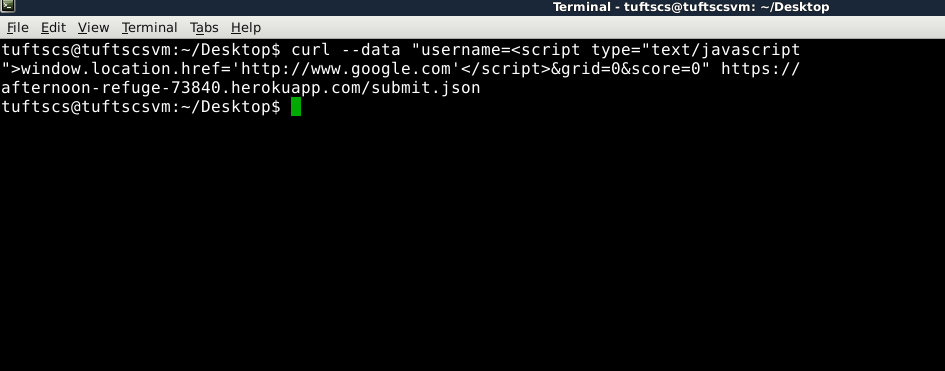
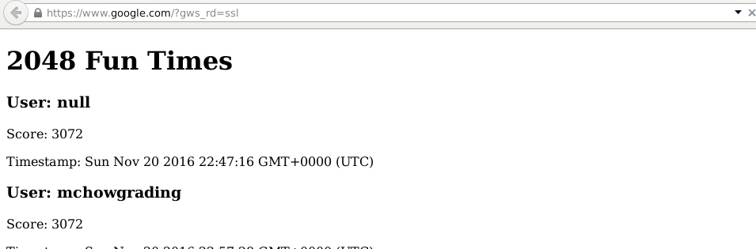
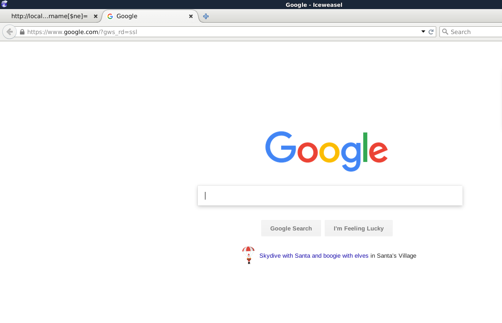
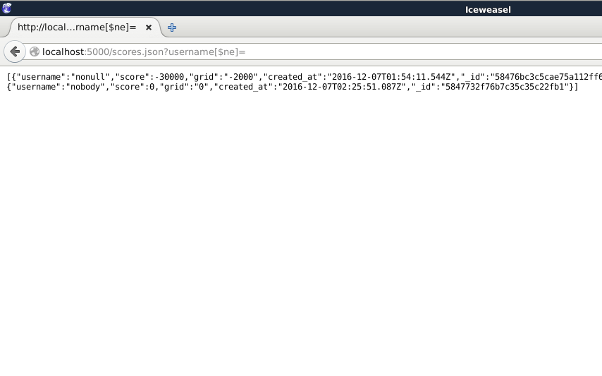
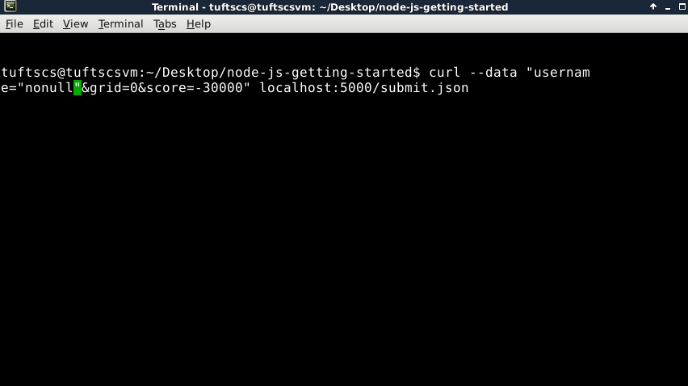
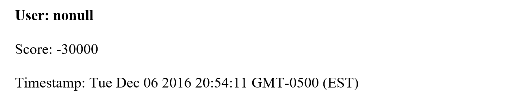

Introduction
This document assesses the security of the 2048 Game Center developed by Mar Freeman.
The Webcenter saves scores for the game 2048 created by Gabrielle Cirulli , and allows submission from various domains. The Webcenter also provides JSON API that can be used to get the scores, grid, and timestamp of certain users. However, while the Webcenter is being used, it has been shown that the Webcenter is not secure, and can be easily tampered with given its vulnerabilities.
I was assigned to identify security vulnerabilities in the application and therefore suggest solutions. I am responsible for black-box testing and manual code review of this application. During which time, I have found several vulnerabilities in Cross-Site Scripting, NoSQL Injections, Improper Input Validation, and Overly Permissive Cross-domain Whitelist. This assessment will address these vulnerabilities respectively.
Methodology
Initially, I performed black-box testing using curl and NoSQL injections. Afterwards, I reviewed the code in order to identify other security or privacy risks.
Abstract of Findings
The 2048 Game Center trusts its user too much. The application does not check if user inputs meet its requirements, so that if a user want to add unnecessary data or viruses onto our application, it can easily be done. Also, user information security is not guaranteed because there are ways for a user to view all user information in the database. Users can also put fake scores into the system so that fairness of the Game Center is impaired.
Issues Found
- Cross-Site Scripting
- Affects POST /submit.json API
- CWE ID: 79; Threat: high to very high
- Data submitted via POST /submit.json is not sanitized and can include Javascript or HTML in place of the submitted message. This vulnerability allows users to perform JavaScript insertion, so that there might be misrepresentation of data and directs to other websites.
- For example, running the following command will redirect the page to google.com.

- Resolution: This issue can be resolved by sanitizing user input before it is saved to the database. The simplist way is to drop special characters like script tags. Also you could use a third-party library like Yahoo's Secure XSS Filters.
- NoSQL Injections
- Affects GET /scores.json API
- CWE ID: 943 (Improper Neutralization of Special Elements in Data Query Logic); Threat: high to very high
- The vulnerability allows all user information in MongoDB unguarded. The attacker can access to all records that is not encrypted in the first place, which, in this case, are usernames and their score and grid information. Inspired by Ming Chow's talk on NoSQL injection at DEFCON.
- By adding [$ne] to the query string, which means all records are selected, a simple MongoDB injection is performed. In this way, an intruder can see all the records in te current database (I only inserted two in the local DB)
 }
- Resolution:This issue can be resolved by accessing MongoDB after further validation steps, instead of using values taken directly from user input. For example:
if (request.query.username) { collection.find( { 'username' : sanitize(request.query.username) }); //manipulate... }- Overly Permissive Cross-domain Whitelist
- Affects POST /submit.json API
- CWE ID: 942; threat: medium to high
- Upon doing a manual code review, I have found out about his response headers allowing Cross-Origin Resource Sharing:
res.header("Access-Control-Allow-Origin", "*"); - However, such a cross-domain policy includes domains that should not be trusted. Otherwise, malicious code could be remotely injected through untrustworthy websites.
- This issue could be resolved by adding a whitelist of acceptable websites, or using a third-party validation tool (nowadays, they are widely included in firewalls) before resource sharing.
- Improper Input Validation
- Affects POST /submit.json API
- CWE ID: 20, likelyhood of exploit is high.
- Users are able to submit invalid data, like fake scores and grids, into the system. This impairs fairness and diminishes the value of the Game Center.
- The user is able to put invalid scores such as -30000 into the database.

- Resolution: Check the range and content type of input before insering it into the database. For example, the score cannot be under 0.
Conclusion
Although Game Center is fulfilling its functions of server-side data persistence and record sharing, its security vulnerabilities make it unsuitable to use on a broarder scale.
There are vulnerabilities that we have the capabilities and tools to solve, likeCross-Site Scripting, NoSQL Injections, and Overly Permissive Cross-domain Whitelist. However, the fact that this application allows anyone to submit data for any domain, there will always be problems with falsified user data, such as fake scores.
The best overall resolution would be to fix the listed vulnerabilities, redesign the score submission system to be with more secure authentication of data validity. Further assesments will still be required.
- Resolution:This issue can be resolved by accessing MongoDB after further validation steps, instead of using values taken directly from user input. For example: